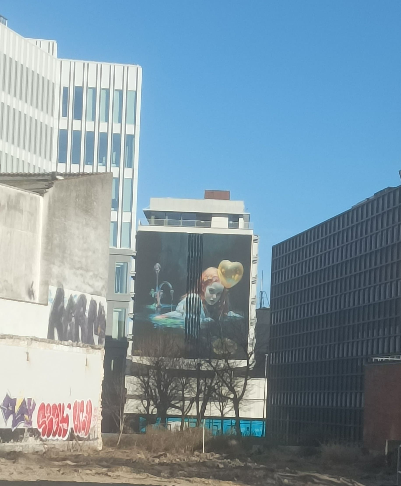
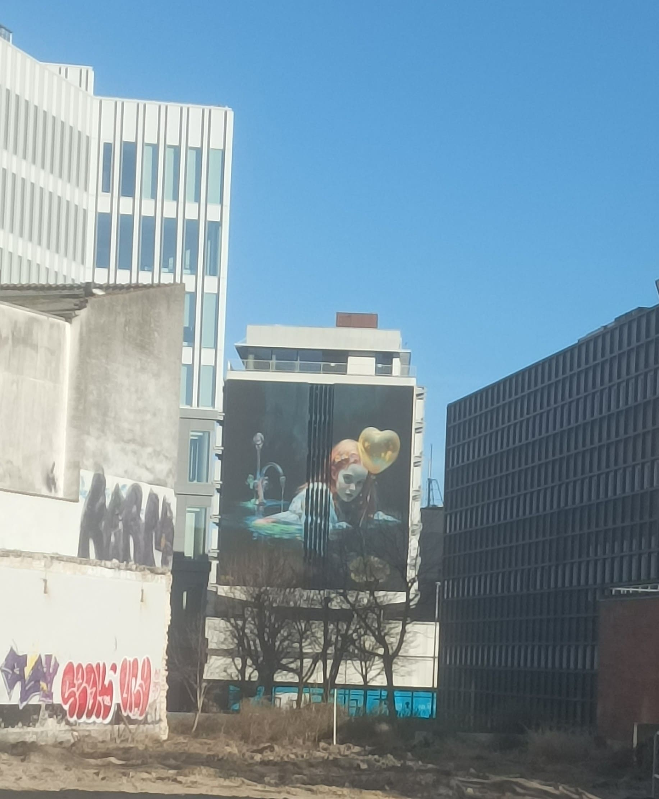
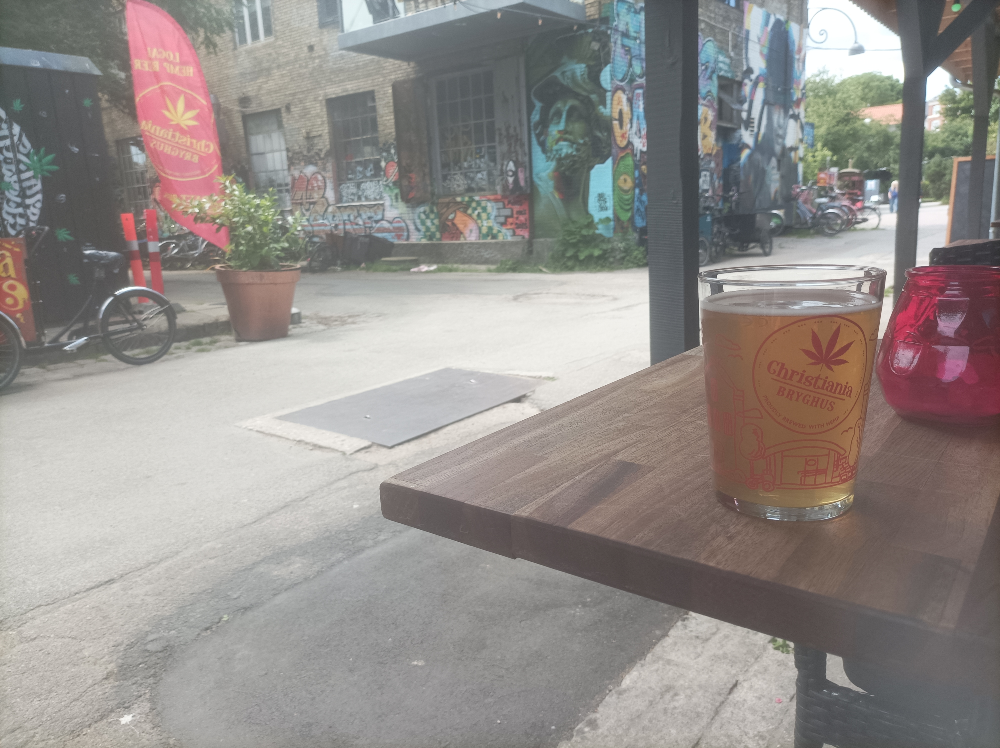
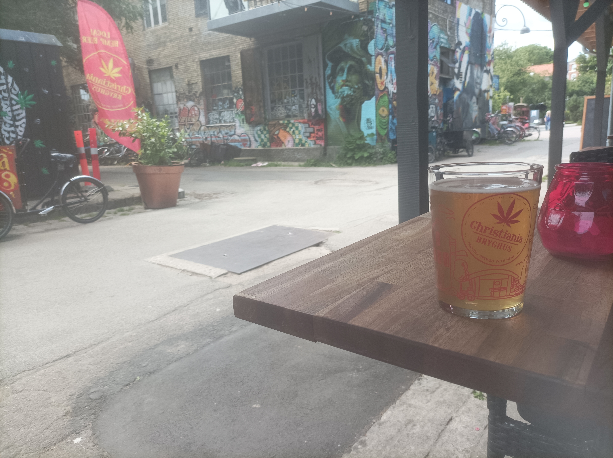
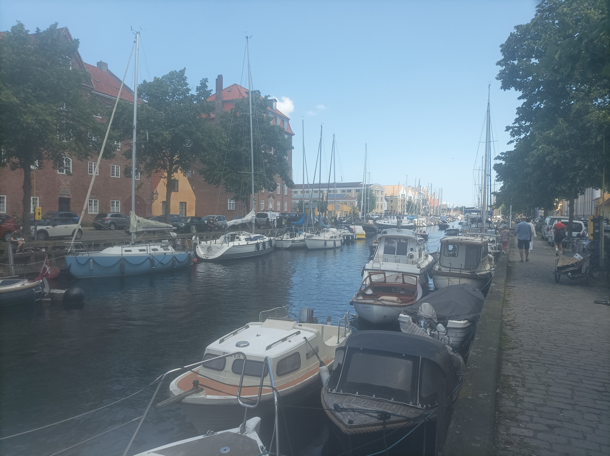
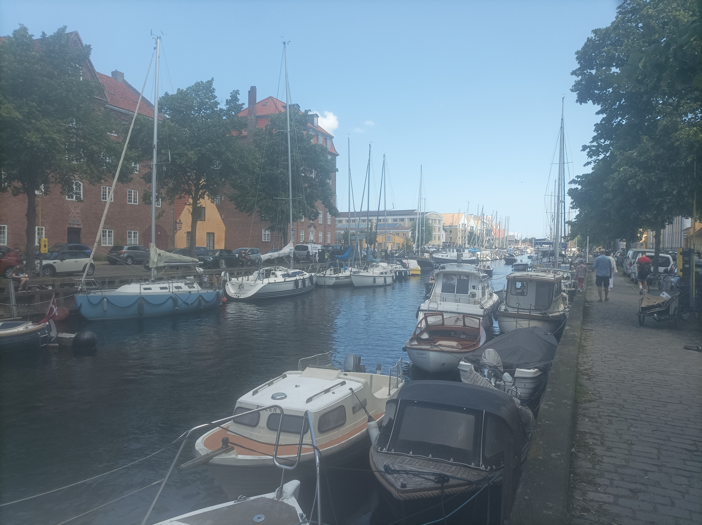
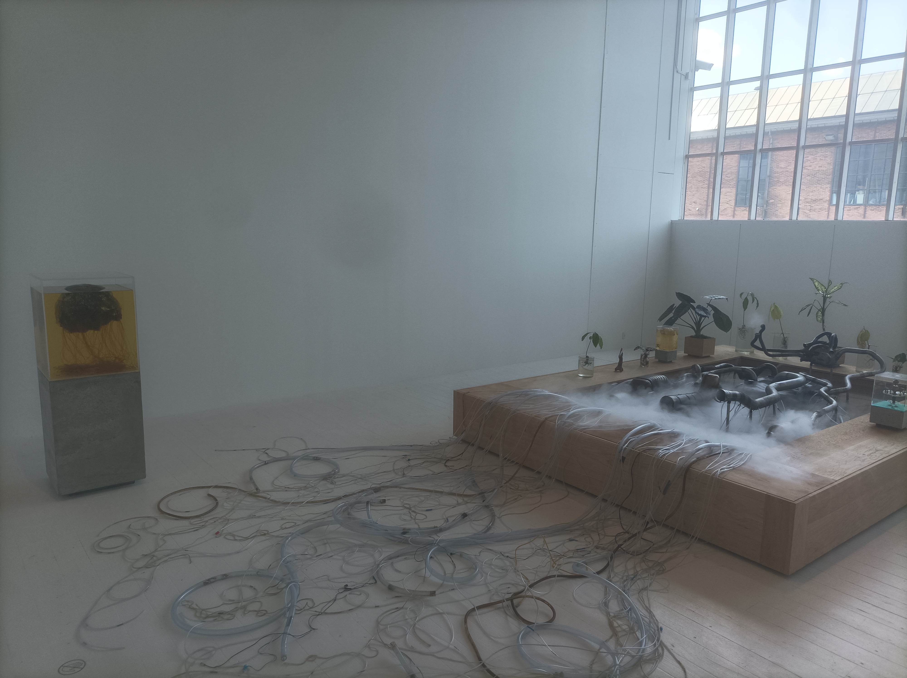
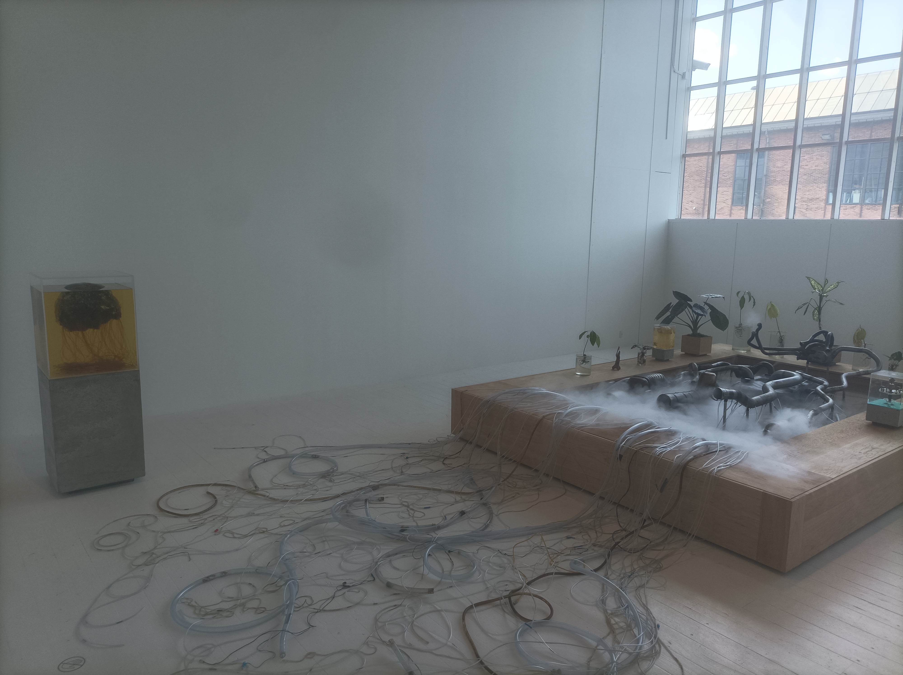
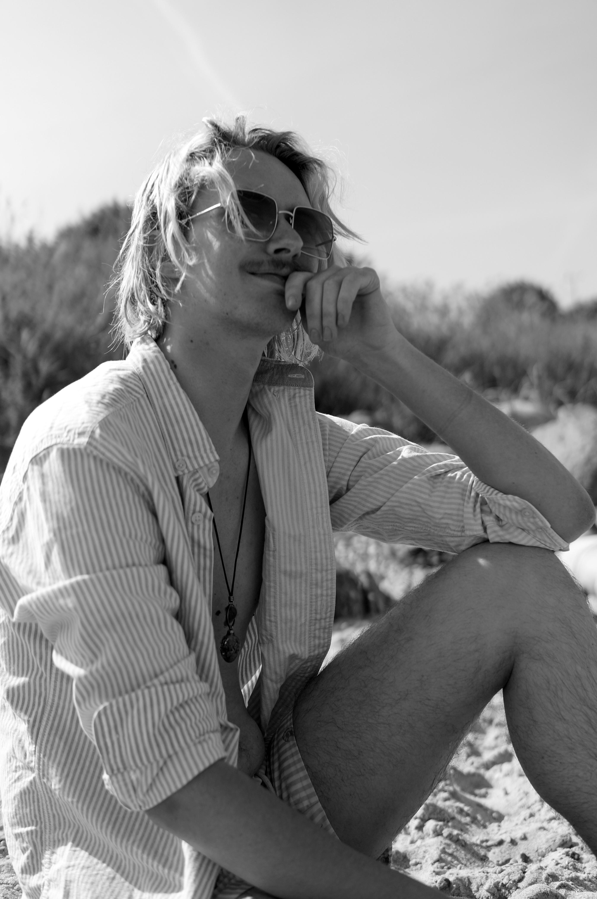
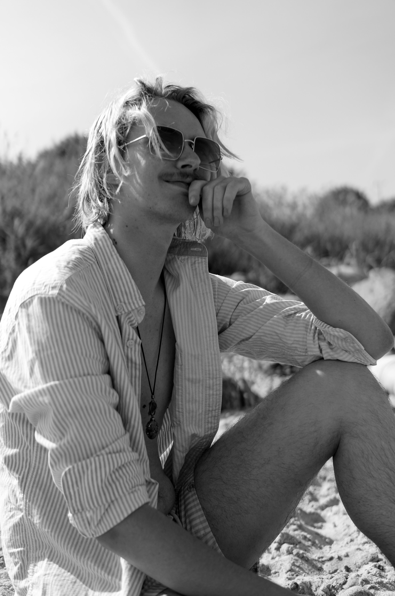

30 mars
Départ et Paris
Dimanche 30 au matin, je quittai Clermont chargé comme une mule, le contenu de mes sacs allant du pratique (vêtements...) au luxe (vidéoprojecteur !) en passant par l'indispensable (pastis.)

Mon premier flixbus ne m'emmenait pas bien loin, puisque je m'arrêtais à Paris. Je n'avais pas vraiment d'option de correspondance, et un ami pouvait m'hébergeait dans sa colloc ce qui m'a bien rendu service ! En revanche, il s'était bien gardé de me prévenir qu'une de ses collocs fêtait son anniversaire le soir-même ! Enfin, une dernière petite soirée en France ne m'a pas fait de mal pour me changer un peu les idées :)


1 avril
Arrivée à Aarhus
Je n'ai rien à raconter de spécial sur le 31 mars : j'ai décuvé pendant la matinée, glandé avec mon ami et ses collocs en début d'après-midi, et suis parti peu après. On a roulé toute la nuit, j'ai eu le temps d'une correspondance pour manger un hamburger à Hambourg (haha), et un peu plus tard dans l'après-midi, je passai la frontière.
On a eu des contrôles de douanes aux deux frontiètes (Allemagne et Danemark), qui se sont évidemment déroulés plus rapidement pour moi que pour la famille érythréenne dont j'avais la mère comme voisine de siège. Toutefois, je n'ai pas pu m'empêcher de constater une différence notoire de sourire entre les douaniers allemands et danois... Je ne dirai pas lesquels étaient plus chaleureux !
Un trajet passé collé au hublot plus tard, me voilà dans la ville qui va m'héberger les prochains mois. Il était trop tard pour que je récupère les clés de mon logement, mais j'avais déjà réservé une chambre dans une auberge de jeunesse qui avait ouvert... la semaine précédente. Ça se sentait : le hall et les cages d'escaliers n'étaient pas encore parfaitement finis, mais surtout, c'était entièrement vide ! Personne dans le dortoir de dix où je dormais, ça à la rigueur je n'ai pas détesté. Mais aussi personne à l'accueil : tout se faisait via une clé en ligne sur mon téléphone. Même le jeune gen-Z que je suis était perturbé.


L'étrange bâtiment avec une sorte d'auréole arc-en-ciel que je voyais depuis ma chambre, c'est ARoS, un musée d'art et un des bâtiments les plus emblématiques de la ville. Un mois plus tard je n'y suis pas encore allé, essentiellement parce que c'est cher, mais il faudra bien que je le fasse à un moment. Et l'arc-en-ciel, c'est simplement un couloir circulaire panoramique vide sur le toit. De ce qu'on m'a dit, c'est 5€ supplémentaires pour y avoir accès. 5€ pour un couloir vide et un panorama obstrué par des vitres teintées, donc. Pourquoi pas.

2 avril
De l'emménagement
Une journée incroyablement dense. Je suis parti le matin de mon auberge de jeunesse cheloue, et je suis d'abord allé à l'accueil international de l'université pour récupérer les clés de mon logement. Ensuite j'ai pris le bus jusqu'au logement en question, à l'autre bout de la ville, et j'ai enfin pu poser mes affaires. Mais pas le temps de ranger : je repartais immédiatement à l'université pour rencontrer ma tutrice de stage, qui partait le soir-même en séminaire à San Francisco pour trois semaines, et il fallait absolumment qu'elle me donne un badge d'accès avant. On a un peu parlé et fait connaissance, mais on s'est rapidement dit au-revoir, car je devais filer au service de l'immigration pour me valider un certificat de résidence, nécessaire pour rester plus de trois mois. Après ça, enfin, j'ai pu rentrer dans ma chambre, ranger mes affaires, et m'écrouler sur mon lit.
3 avril
Une première visite d'Aarhus !
On me laissait un jour de repos pour emménager, et j'en avais bien besoin. J'ai dormi jusqu'à près de 15h, et l'après-midi je n'ai pas pu résister à l'envie d'aller faire un premier petit tour en ville. Je suis un piètre photographe et lui rend mal hommage, mais c'est absolumment charmant. On a presque toujours l'impression d'être dans un petite ville mignonne, mais en réalité c'est plus grand que Bordeaux ! Les deux choses frappantes pour un français restent quand-même l'omniprésence des vélos (pistes cyclables et miriades de vélos laissés sans anti-vol sur les trottoirs), et la propreté impeccable des rues ! Bref, c'est une ville où on peut se plaire.


 



4 avril
Début du stage
N'oublions pas que je suis quand-même ici pour travailler. Du coup, le vendredi de ma première semaine, je suis retourné à l'université. Mais cette fois, je n'allais pas à la fac de philosophie où travaille ma tutrice, mais à celle de psychologie. Arthur, un collaborateur du groupe de recherche de ma tutrice est un tout jeune chercheur, docteur depuis cette année, qui fait de la psychologie expérimentale avec un intérêt pour les interactions homme-machine. Or il a une idée d'expérience que je détaillerai plus une autre fois, mais qui demande l'utilisation d'un chatbot, basé sur des modèles de langages IA, mais formés pour les besoins de l'expérience. Bref, ça demande tout un travail d'ai-engineering, qui n'était pas au programme de son master de psychologie, pas plus qu'il ne l'était dans le mien. Mais la différence, c'est que moi j'ai le bagage suffisant pour m'auto-former !
En sortant de la fac, je suis rentré chez moi à pieds, et j'en ai profité pour faire un petit tour par le port. Le Kattegat ça n'est pas la Méditerrannée, mais c'est déjà mieux que Clermont-Ferrand et son pitoyable lac de Cournon.

6 avril
Présentation de la chambre :)
Bon, je me fais harceleler par ma mère pour ça, il est temps que je révèle enfin le nid douillet qui m'abrite et continuera de m'abriter jusqu'à mi-août. Tadaa !
Voilà, ben ça fait le taf hein ? Y'a beaucoup d'espace, qui ne sert à rien en soi, mais au moins ça me fait un grand mur blanc dégagé, ce qui est pratique pour le vidéoprojecteur. C'est là que je passe la plupart de mon temps, mais je suis naturellement forcé de me rendre aux salles de bains, toilettes, et cuisines communes. D'ailleurs, si je me suis habitué presque instantanément à devoir sortir pour la salle de bain et les toilettes, je commence tout juste, un mois plus tard, à être à l'aise avec la cuisine commune. Le truc, c'est qu'il y a toujours une ribambelle de gens qui y traînent. Or, j'ai beau être quelqu'un de plutôt (voire très) sociable, je ne suis pas vraiment dans cet état d'esprit quand je rentre me poser chez moi le soir. J'aimerais me déconnecter du monde et profiter d'un film dans ma bulle, et le fait de casser ça pour aller dans un lieu de vie populaire pour me faire un truc à grignoter ou à boire, c'est très inconfortable. Mais ça va de mieux en mieux, à la fin je n'y penserai sans doute plus vraiment. Et quand je serai de retour dans mon appartement à Clermont, je profiterai de mon luxe à sa juste valeur.


7 avril
Au bureau
Si je passe beaucoup de temps dans ma chambre, j'en passe aussi une certaine quantité dans mon bureau à la fac ! J'en ai un juste pour moi à la fac de philosophie, mais comme je travaille avec Arthur à la fac de psychologie pour l'instant, on m'a trouvé un endroit ici. Je partage le bureau avec deux personnes. D'abord Yun, une coréeene adoptée au Danemark qui a grandi Aarhus, fait ses études ici, et travaillé comme psychologue clinicienne pendant 10 ans. Elle a commencé à venir donner des cours comme intervenante à l'université, ça lui a plu, donc maintenant elle fait un doctorat à mi-temps. Ensuite, il y a Sofie, une étudiante danoise à l'université d'Aarhus qui fait une sorte de stage de recherche pour finir son master. "Une sorte" parce qu'elle a toujours quelques cours à côté, donc elle aussi n'est là qu'à mi-temps. Toutes deux sont ultra sympathiques, et Arthur qui passe souvent venir me voir est adorable également. Je ne saurais espérer une meilleure ambiance de travail :)


12 avril
Ça va clubber
Après une semaine pour m'installer et une première véritable semaine à la fac pour prendre mes marques, je continuais à me coucher à 20h et dormir 10h par nuit pour calmer la charge émotionnelle. Il était temps de passer à une méthode plus efficace pour relâcher toute la pression. Et quoi de mieux pour ça que de m'entamer la tronche à la bière danoise avant de sortir en rave party psytrance ? Question rhétorique : rien évidemment, c'était génial !

Je me suis un peu perdu sur le chemin retour que je faisais titubant à trois heures du matin, mais mes errances m'ont fait trouver un panneau d'entrée dans la ville, ce qui ne m'a vraisemblablement pas laissé indifférent.

15 avril
Some Danish Facts
Le Danemark est un pays chelou. Et pour appuyer mon propos, j'aimerais dans cette entrée vous partager certains de mes premiers Danish Facts préférés, en espérant en avoir d'autre à vous partager plus tard.
Danish Fact #1 : Les nombres. On pense à tort en France que notre façon de nommer les nombres (4*20+12 pour 92) est farfelue. Et bien les danois sont encore un niveau au-dessus de nous. Je ne vais pas prendre le risque d'essayer de réexpliquer ça moi-même, je vous renvoie vers ce blog d'un gars qui se plie à l'exerice à ma place : lien
Danish Fact #2 : Les notes. En France, on a l'habitude d'avoir des notes qui vont de 0 à 20. Au japon, l'échelle habituelle va de 0 à 100. Le suisses sont un peu plus originaux, puisque les notes vont de 1 à 6. Mais ils restent très loin d'égaler la fantaisie du Danemark, et leur barème allant de -3 à 12.
Danish Fact #3 : La monnaie. La monnaie au Danemark est la couronne danoise (DKK). Elle est toutefois indéxée sur l'euro, avec un rapport de change 1 EUR = 7.5 DKK. À peu près, mais ma banque fait l'arrondi et j'avoue que la division par 7.5 est déjà une assez bonne gymnastique intellectuelle à mon goût. Bref, et donc un centième de couronne, c'est un øre, soit 7.5 fois moins qu'un centime, c'est à dire vraiment pas grand chose. La banque danoise en a conscience, et c'est pour ça que la plus petite pièce de monnaie s'arrête à 50 øre = 0.5 DKK. Mais là où ça devient rigolo, c'est qu'il n'y a aucune obligation à ce que les prix soient divisibles par 0.5 ! Par exemple, un billet de bus c'est 26.80 DKK. Il n'est donc pas possible de payer un billet de bus en espèce. Enfin, si, mais on doit arrondir au supérieur et ne pas s'attendre à ce qu'on nous rende la monnaie.
Danish Fact #4 : Les claviers. Les claviers danois sont des QWERTY légèrement adaptés pour avoir un accès rapide à leurs lettres cheloues (ø, å, æ). Tout esprit sensé aurait donc rajouté une touche pour chacune de ces lettres, qui passeraient majuscules si on appuie sur shift en même temps, comme c'est le cas pour l'intégralité des autres lettres. Mais vous commencez à connaître les danois : ils ont opté pour une autre solution. Je vous laisse méditer.

17 avril
Repas partagé à la résidence
On a un groupe Whatsapp de la résidence, et ce jour-là, quelqu'un a proposé qu'on organise un grand repas partagé pour faire connaissance les uns avec les autres, comme on avait été nombreux à arriver récemment. J'avais déjà rapidement fait connaissance avec certains de mes "floormates" dans la cuisine, mais c'est la première fois qu'on passait vraiment du temps ensemble, et c'était bien chouette !

18 avril
Aarhus by night : première expérience
Comme le repas partagé de la veille s'était bien passé, on avait été plusieurs à décider de sortir le lendemain, pour profiter un peu de la friday night à Aarhus. On a eu plusieurs lâcheurs entre temps, mais on a quand-même pu former une petite équipe avec laquelle on a exploré deux bars assez peu convaincants, une boîte de nuit tout aussi peu satisfaisante, et une deuxième boîte pire encore. Mais bon, si on a pu rayer quelques lieux, il en reste heureusement plein d'autres en ville !
24 avril
Cacolac
Ce jour-là, alors que je gambadais comme à mon habitude dans les allées du supermarché près de ma résidence, j'ai fait une découverte qui a su me réjouir au plus haut point. Voyez-vous, il y a à l'ISIMA un Bureau des étudiants qui tient un foyer au sein duquel nous pouvons nous procurer moyennant paiement une ribambelle de choses à grignoter et à boire. Afin d'exacerber nos pulsions dépensières, un classement est tenu rendant honneur au plus gros acheteur de chaque article proposé. Or, peu avant mon départ au Danemark, j'ai pris la tête sur un article d'exception : le divin Cacolac. Je pensais devoir faire un trait sur ce plaisir coupable qu'est le mien, mais pour mon plus grand plaisir, je sais désormais où me procurer l'équivalent danois du divin Cacolac !
25 avril
Jour de fête : Kapsejlads et GBar !
Que vous évoque le 25 avril 2025 ? Si vous répondez l'anniversaire de Yann Guillon ma masterclass de petit frère adoré, vous n'aurez certes pas tort, mais vous trahissez surtout que vous n'êtes pas un étudiant Aarhusois (pas sûr du gentilé). Car se déroulait ici le plus gros événement organisé par des étudiants de toute la confédération nordique ! Information que m'a colportée Sofie, mon office mate, à débunker donc. Son nom : Kapsejlads. Le principe : une course-relai en canoë, avec des consignes de consommation d'alcool au moment des relais que je n'ai pas très bien comprises. Les douze équipes correspondent à des associations de douze filières différentes de l'université, et la préparation est intense : costumes, clip musical, recherche de sponsors, c'est presque comparable aux campagnes BDE des grandes écoles en France. Quant à ce qu'il y a à gagner, c'est très simple : la gloire éternelle, et l'affirmation de la suprématie de ta filière sur les autres. Évidemment j'étais pour la psychologie, mais cette année la victoire est revenue aux dentiers.
On ne dirait pas forcément présenté comme ça, mais l'événément est un truc tellement immense ici que beaucoup d'étudiants arrivent dès deux/trois heures du matin alors que la course ne commence qu'à quinze heures. Alors évidemment, comme il faut faire passer le temps, on s'abreuve de quantités d'alcool désapprouvées par le ministère de la santé, on met de la grosse musique à fond, et on chante l'hymne danois à poil dans les arbres. On retrouve d'ailleurs cet intérêt typiquement nordique pour la nudité lors d'un autre moment-clé de la journée : la course nue autour du lac. Course mixte attention, on est dans un pays développé. J'ai, à mon grand dam, raté la course, mais on m'a confirmé que les jeunes athlètes danois valaient le coup d'œil.


En rentrant des Kapsejlads, j'étais d'humeur à profiter de la folie estudiantine du soir portée par ceux qui ne s'étaient pas encore écroulés au cours de la journée. Du coup j'ai rejoint Lucas, un ami brésilien de ma résidence, et on est allé ensemble tester le lieu étudiant homo d'Aarhus : le GBar. Indiuits en erreur par le nom, on y est arrivé à l'heure à laquelle on arriverait à un bar, et le dancefloor était vide à en être gêné. Mais peu à peu les choses se mirent en route, et on a clubbé comme des petits fifous jusqu'à trois heures du matin.
Après cette chouette soirée, on a été ébloui par la vue nocturne du fleuve "Aarhus", et j'immortalisai ce moment magique. Enfin, j'ai essayé. Heureusement qu'il me reste le souvenir.

29 avril
À bicyclette
Ma résidence est atrocément située à l'autre extrémité de la ville par rapport à la fac, il est donc inenvisageable de m'y rendre à pieds, sauf que le bus coûte débilement cher. La solution est simple : faire comme 50% des danois qui l'utilisent au moins une fois par semaine, me déplacer à vélo ! Je suis allé dans une boutique qui fait de la location mensuelle reconductible en ligne, c'est à dire que jusqu'à mon départ, mon bébé est à moi !
La circulation urbaine a dû intégrer les besoins des cyclistes, et clairement, ça change de la France. Mais du coup, comme il y a partout des pistes cyclables assez larges pour être appelées deux-voies et qu'elles sont massivement utilisées, on voit apparaître de nouvelles catégories d'emmerdeurs propres à cet écosystème. Emmerdeur n°1 : les scooters qui nous piquent notre voie. Emmerdeur n°2 : les couples ou duos d'amis qui roulent côte à côte à deux à l'heure tout en discutant et qui ne se laissent pas doubler. Emmerdeur n°3 : ceux qui ont un vélo avec une espèce de cabine pour bébé hyper large à l'avant, qui fument tout le monde par la gauche au feu, puis qui redémarrent à deux à l'heure et ralentissent toute la file derrière qui ne peut pas les doubler. Emmerdeur n°4 : les sportifs trop confiants qui considèrent qu'une troisième voie est possible et doublent celui qui est en train de te doubler.
Enfin bon, la vérité c'est que moi, tous ces emmerdeurs ne m'emmerdent pas plus que ça. Mon vrai problème, c'est que je suis une énorme larve, qui arrive chaque matin tout rouge et essouflé des 20 minutes de côte que je viens de me taper, et qu'à côté de ça, des salopards de danois frais comme des gardons me doublent à toute berzingue sans le moindre effort. Je reviendrai certainement en France dans le meilleur état de santé de mon existence, mais pour l'instant l'humilité s'impose.
1 mai
Salling Rooftop
"Si tu veux avoir la meilleure vue sur Aarhus sans payer, il faut que tu ailles à Salling !" me dit un jour Yun, une de mes camarades de bureau, à la traduction près. Ainsi soit-il, je me suis donc rendu à Salling, sans avoir la moindre idée de ce qu'était Salling. Et bien il s'agit d'une sorte de supermarché "de luxe", avec des galeries de vêtements français, de parfums français, le meilleur choix de la ville en fromages français, une cave à vin immense et du pathé. Bon, j'exagère, les italiens et les anglais avaient aussi droit à leur part de reconnaissance. Ce lieu étonnant est doté d'un toit-terrasse, sur lequel on trouve un café, un bar à cocktail, mais surtout une vue panoramique des plus sympathiques ! J'y ai d'ailleurs rencontré d'autres français pour la première fois de mon périple sous la forme de deux étudiantes erasmus. Décidément, on se sent à Salling comme dans une ambassade.


3 mai
Un café devenu street food
Parmi les gens que j'ai rencontrés à Aarhus, les deux que je pourrais qualifier de mes "meilleurs amis" sont Narges et Lucas de ma résidence. Aujourd'hui on était censé partir explorer la région ensemble, mais face aux imprévus météorologiques, on a repoussé ça à une prochaine fois. On est sorti prendre un café à la place, et on en a profité pour errer un peu dans la ville.

Mauvais calcul de notre part : nos errances s'éternisèrent tant que rapidement, plus aucun café n'était ouvert. En revanche, on atteignait une heure à laquelle il était pertinent de manger, et Lucas nous a alors proposé un lieu qui m'avait été fortement recommandé par ma camarade de bureau Sofie quelques jours auparavant : Street Food. Le concept est assez similaire aux Halles du Brézet pour mes clermontois sûrs, et pour les autres, c'est sans doute assez similaire à quelque chose chez vous aussi. En fait, un ensemble de petits stands proposant de la street food de différentes sortes et de différentes origines se sont réunis dans un même lieu, on a donc un choix immense, chacun peut se laisser aller à ses propres envies, et c'est en général délicieux. Le lieu est d'autant plus agréable qu'en plus de s'y régaler, les prix sont très raisonnables pour le Danemark, et que l'extérieur a un petit air du genre de lieux un peu hippie qu'on peut trouver en festival typiquement. Donc pluie à part, la soirée avait un petit air de vacances estivales !

5 mai
Sortie ciné
En France je suis accro au cinéma, donc naturellement, je rêvais d'aller me faire au moins une séance au Danemark ! Je fis toutefois rapidement face à un obstacle des plus repoussants : le cinéma coûte cher, très cher ici. Après conversion, on tombe entre 16 et 17 euros la séance. J'avais beau être curieux, je ne me voyais pas vraiment dépenser cette somme pour un film auquel j'allais, en soi, ne rien comprendre. Fort heureusement, il existe en France un organisme cherchant à diffuser notre culture à l'international appelé l'Institut Français, dont la branche danoise a la bonne idée de proposer des diffusions de films français en VO les lundis soirs grâce à des cinémas partenaires dans les trois plus grandes villes danoises, ce qui inclut Aarhus !
Je m'en allai donc à Øst For Paradis, ce qu'il y a de plus "art et essai" comme cinéma dans la ville, pour voir "En Fanfare", film d'Emmanuel Courcol avec Pierre Lottin et Benjamin Lavernhe que je n'avais pas eu le temps d'aller voir en France, et qui valait carrément le coup d'œil. La salle était complète, et je faisais vraiment tâche au milieu des groupes de vieux danois bourgeois. Il y avait aussi un verre de vin rouge français offert à la fin de la séance, et il était à ma grande surprise très bon ! Première fois que je goûtais un vin buvable au Danemark, c'était une expérience très plaisante. Bref, au final c'était une soirée bien sympathique. Le lendemain j'en ai parlé à Yun, une de mes camarades de bureau, à la fois cinéphile et francophile, en lui mentionnant que dans quelques semaines sera projeté "les femmes au balcon", l'excellent premier film de Noémie Merlant comme réalisatrice. Je retournerai donc certainement vivre l'expérience Øst For Paradis, cette fois-ci accompagné.
11 mai
Silkeborg
Depuis un moment, j'avais envie d'aller visiter Silkeborg. Avec 50 000 habitants c'est la 12e ville du Danemark, accessible depuis Aarhus en une heure de bus, terre natale de ma camarade de bureau Sofie. J'avais évoqué cette idée lors d'un petit-déjeuner à Narges, une amie de la résidence, et par bouche à oreille, on se retrouva finalement toute une petite équipe à partir pour cette excursion dominicale.
On ne m'avait pas menti, la ville est effectivement charmante. Son principe, c'est d'être construite autour d'un lac duquel partent trois rivières dans trois directions différentes. Du coup, où qu'on se ballade, on finit toujours par se retrouver à longer un cours d'eau. Et si on n'est toujours pas satisfait, longer celui qui part vers le sud nous fait passer par près d'une dizaine d'autres lacs plus ou moins gros. Pour ce qui est du centre-ville, une chose m'a frappé : rien n'avait l'air ancien. Et il y a une explication simple à ce sentiment : il n'y a, effectivement, rien d'ancien. En fait, la ville s'est vraiment développée à la fin du 19e siècle ! Et ce pour une raison qui peut être déduite de cette autre statistique : Silkeborg est la plus grande ville du Danemark sans accès à la mer. Du coup la ville est assez rigolote : un immense lac, trois rivières, une très grande rue avec les commerces et restaurants, et des quartiers résidentiels colorés.
Dans la composition de notre petit groupe, il y avait Bob (troisième en partant de la gauche sur la première photo). Or Bob a la très bonne idée d'aimer la photo, et se fit notre paparazzi tout au long de la journée. Ça fait des beaux souvenirs, mais surtout ça change de ce à quoi vous êtes habitués sur ce blog !

Enfin bref, c'était une bien chouette journée. La ville et le lac étaient mignons, mais en réalité, c'était surtout le fait de sortir d'Aarhus et partir en vadrouille qui était excitant ! C'était aussi la première fois qu'on faisait quelque chose de la sorte entre gens de la résidence, donc ç'a aussi consolidé les amitiés :)
14 mai
Vinsmagning med Rendez-Vous
Il y a à Aarhus, comme dans toutes les universités, une fac de langues. Et parmi les filières qu'on y trouve, il y a la français. Forcément j'étais curieux, et depuis quelques temps j'avais envie d'aller rencontrer ces étudiants en français danois, si je puis dire, et quoi de mieux pour ça que l'inititation à la dégustation de vin organisée par leur BDE ? Bon, au début je me suis dit que j'avais peut-être fait une erreur de calcul, parce que je me suis retrouvé seul au milieu de groupes déjà formés de camarades de promo discutant entre eux en danois. Mais finalement lorsqu'on s'est mis à différentes tables pour la dégustation, il a été plus facile de parler avec les gens autour de moi. Cependant, je n'aurai finalement pas plus que ça rencontré les étudiant·es, j'ai surtout discuté avec un de leurs professeurs, un gars très sympa, et authentique français de touraine ! Pour ce qui est des vins, on a goûté des choses inégales, mais il y avait notamment un viognier de Provence des plus réjouissants :) Une bonne soirée donc !
17 mai
Eurovision
Certes les musiques sont souvent minables, certes c'est stéréotypé, certes le slogan "United by music" peine à voiler la nature éminemment politique du concours ; il n'empêche que l'Eurovision reste un plaisir coupable ! Pour ne rater aucune musique, je regarde aussi les demi-finales. J'avais proposé sur le groupe de la résidence de les projeter dans la cuisine commune du deuxième étage, ce fut un incommensurable flop, mais je découvris que les gens d'une troisième étage, dans une scandaleuse politique ségrégationniste, organisaient leur propre contre-soirée. Du coup j'y suis allé, j'ai pu rencontrer d'autres personnes que celles que je vois tout le temps, c'était chouette.
Samedi, c'était le jour j. Les deux demi-finales étaient passées, donc j'avais pu me faire mes favoris. Je m'étais régalé avec la musique l'Australie mais, ô malheur, elle n'avait pas été qualifiée. Mes chouchous restant étaient l'Albanie, la Suède, et surtout l'Espagne. Évidemment tous les medias français n'avaient d'yeux que pour Louane, mais honnêtement j'étais vachement peu emballé. Quant au Danemark, malgré ma sympathie pour ce petit royaume, je trouve ça déjà miraculeux que leur immonde daube soit arrivée jusqu'en finale.
Cette fois il y eut vraiment de l'ambiance, puisque la finale était projetée à la Studenterhus ! Plusieurs filières ont leur propre bar étudiant, mais la Studentenrhus est leur boss final. Et en plus du bar, ils organisent tout un tas d'événements. C'est notamment eux qui font l'intégration des étudiants Erasmus. Et en parlant de finale donc, ce soir celle de l'Eurovision était projetée sur grand écran. Il y avait beaucoup de monde, et on sentait dans l'enthousiasme de certains un biais que je prends le risque d'expliquer par le patriotisme. Par exemple, j'ai l'audace de supposer que le groupe de six personnes qui hurlaient à chaque fois que la Pologne était mentionnée et dont la moitié avait la face peinte en rouge et blanc était composé de polonais. De mon côté, je me suis retrouvé à une table de gens qui, comme moi, n'étaient pas venus en groupe. Un allemand, une espagnole et deux danois qui, nouvelle preuve irréfutable d'un biais patriotique, supportaient le Danemark.
21 mai
Des pitchounes
Pour une fois je vais parler de quelque chose qui s'est passée au travail ! Toujours pas ce que je fais concrètement (promis je finirai par le faire), mais d'une quête annexe qui fut bien rigolote. Pour le contexte tout de même : ces temps-ci je passe un peu moins de temps à l'université de pyshologie et je commence à être un peu plus présent à celle de philosophie pour m'intégrer doucement de plus en plus au reste du groupe. Là-bas, une des personnes avec qui je travaille le plus directement est Peter, l'informaticien du groupe. Or, Peter s'est retrouvé cette semaine en charge d'un groupe de cinq équivalents de collégiens de 15 ans de l'Aarhus International School qui font ce qu'on pourrait comparer à un stage de troisième. La veille, il m'avait proposé de discuter avec eux pendant 1h30-2h parce que ça pourrait être intéressant pour eux de rencontrer quelqu'un de la même génération mais plus avancé dans le parcours qu'ils aspirent à suivre.
Bon, grosse douille en réalité. C'est au moment où les collégiens sont arrivés que j'ai compris qu'aucun d'entre eux n'avait la moindre intention de faire de l'informatique, et que très clairement Peter cherchait juste un moyen de s'en débarrasser le temps d'une matinée. Et bien tant pis, je suis très content de lui avoir rendu ce service, parce que la discussion avec ces pitchounes était vraiment super intéressante ! On a parlé de choses un peu cohérentes comme de leurs projections dans les études et l'avenir, et comment le mien avait évolué. On a parlé de choses un peu moins directement cohérentes, comme des systèmes d'éductation ou du rapport aux technologies. On a enfin parlé de choses qui n'avaient plus rien à voir, comme de langues, d'histoire ou même de géopolitique. Et outre leur niveau d'anglais qui met une race à au moins 90% des français, il y avait dans leur façon de parler une mesure et une finesse de réflexion assez bluffantes. (Notez que je fais exprès d'éviter le terme "maturité", je viens de finir un livre sur la politisation de la domination adulte-enfant, ça a changé ma façon de voir le monde, mais je m'égare.) Après, je me base essentiellement sur les souvenirs de comment mes amis et moi étions quand j'avais 15 ans, et peut-être qu'on était juste particulièrement hors-sol.
23 mai
D'agréables conférences
Depuis que j'arrête de m'isoler dans mon bureau au département de psychologie et commence à traîner avec le reste du groupe, je suis embarqué dans un peu plus d'aventures au sein de l'université. Notamment, je découvre cet aspect central de la vie d'un laboratoire que sont les conférences ! Presque toutes les semaines dans tous les départements, quelqu'un est invité à faire une présentation de ses travaux en cours, pour qu'il y ait ensuite une discussion. C'est intéressant, c'est convivial, c'est trop bien :)
J'aurais dû en faire trois au cours des deux dernières semaines, mais pour la dernière je n'ai pas trouvé la salle. Pour la deuxième, il s'agissait d'une présentation de Caterina Villani, linguiste à l'université de Bologne, sur les différences et corrélations entre les caractères "abstrait", "complexe" et "général" d'un discours, et surtout comment ils sont perçus par les récepteurs de ces discours. La méthodologie de ses expériences a un peu été critiquée, mais le fond théorique était très intéressant, au moins en ce qui me concerne.
L'autre conférence à laquelle j'ai assisté était animée par Mads Hansen, un boug actuellement en postdoc à Bristol, qui a fait avant ça son doctorat à Aarhus, avec Johanna comme directrice de thèse ! Son sujet était "Why you should start thinking in terms of constraints". Pour le peu que mon avis compte, ça m'a semblé manquer de base et de structure vraiment bien définies, ce que je ressentais particulièrement dans liens parfois vachement bancals qu'il faisait avec la science. Mais si la conférence n'était pas dingue, la discussion après le fut ! Une chercheuse et un chercheur de l'université de Virginie étaient là pour la semaine, dont un boug appelé Talbot Brewer qui était fascinant. Non seulement il avait une culture encyclopédique au point de citer carrément les dates et parfois même les chapitres des livres auxquels il faisait référence quand il parlait, mais il était en plus d'une clarté qui rendaient les concepts poussés dont il parlait plus limpides que l'allégorie de la caverne présentée par mon prof de philo de terminale. Et alors, quand en plus de ça la discussion se faisait avec Johanna ou sa collègue de l'université de Virginie Elizabeth Barnes, ça devenait intellectuellement jouissif à écouter.
Pour faire encore mieux, la coïncidence voulait que ce soit le dernier jour de Talbot et Elizabeth à Aarhus, et que pour l'occasion le département nous payait le restaurant. Et fatch, faut voir le restaurant en question ! Il y avait en tout et pour tout deux menu : végétarien ou non-végétarien, respectivement autour de 90 et 100 euros. En ma qualité de français on m'a aussi chargé de choisir le vin ; ce fut un Crozes-Hermitage qui, aussi excellent fut-il, soumis aux inflations du Danemark et du restaurant a coûté plus de 80€ ce qui m'a semblé un tantinet exagéré. Au niveau de la bouffe, on a d'abord eu une entrée construite autour de saumon préparé d'une façon traditionnelle danoise. Mon palais de pouilleux a surtout trouvé que c'était cru et pas très goûtu, mais je peux aisément croire que c'était du haut niveau. Pour le plat c'était un frugal filet de bœuf avec une intrigante sauce flambée au cognac. C'était donc salé avec un goût de cognac. Là encore, je me sens coupable de ne pas avoir un palais capable d'apprécier ce que je mangeais à sa juste valeur.

En réalité, même si je ne suis pas un fin gourmet, je me suis quand-même fichtrement régalé, et c'est incroyable d'avoir pu manger dans ce restaurant gratuitement. Et puis, ç'a m'a permis de rencontrer des gens, et aussi d'un peu mieux faire connaissance avec Johanna, c'est toujours bien !
27 mai
More Danish Facts
Le temps passe, et j'en découvre un peu plus sur ce pays chelou qu'est le Danemark. Voici quelques-unes de mes dernières découvertes.
Danish Fact #5 : Seconde Guerre Mondiale. Quand on étudie la Seconde Guerre Mondiale en cours d'histoire en France, vous vous souviendrez peut-être que le Danemark n'est, en général, pas mentionné. Le pays a pourtant des statistiques assez extravagantes : comme ses épiques deux heures entre le début de l'invasion allemande et la capitulation ; où ses 7500 juifs sauvés sur 8000. Je ne vais pas détailler cette intéressante histoire moi-même, je vous renvoie vers cette vidéo au sujet de l'invasion et celle-ci (en anglais) sur l'occupation, la résistance et le sauvetage des juifs.
Danish Fact #6 : La mode. Les danois ont un rapport à la mode assez décontracté. Globalement, on ne voit presque pas comme c'est le cas en France d'intégral survêtement ni de tenue beaucoup trop sophistiquée (je fais donc encore plus tâche !). On pourrait dire qu'ils font ce qu'il faut pour être correct tout en restant simple et confortable : de simples pantalons (ou pantacourt !), robes, t-shirt ou chemise sans cravate. Mais en général la coiffure et le rasage sont impeccables, et le maquillage quand il y en a est très sobre. Ça me plaît bien ; j'émets toutefois une réserve au niveau des chaussures. Déjà les chaussettes avec chaussures ouvertes sont omniprésentes, mais il n'est aussi pas rare de voir des gens en crocs ou en tongs déambuler dans l'université, sans que ce soit une quelconque forme de manifestation !
Danish Fact #7 : Un plat pays. Jacques Brel désignait ainsi sa terre natale, et il est vrai que les 694 mètres d'altitude du Signal de Botrange font un peu pitié à côté des 4806 de notre Mont-Blanc. Mais en réalité, c'est déjà deux fois plus que les tristes 322 mètres d'altitude du Vaalserberg, point culminant des judicieusement nommés Pays-Bas. Mais alors, qu'en est-il du Danemark ? Réponse : 170 mètres. Alors, un danois très patriote serait tenté de vous dire que leur point culminant est en fait de 3694 mètres et se trouve au Groenland, mais en réalité... 170 honteux mètres de haut. Hors îles et archipels, ce record n'est battu que par la Gambie, le Qatar, le Vatican et Monaco, c'est dire ! Ce site montre quelques photos de la catastrophe. Comme ça n'est qu'à deux bonnes heures de vélo d'Aarhus, j'essaierai d'aller y faire un tour ; et au moins je suis sûr qu'il n'y aura pas trop de côte !
Danish Fact #8 : La retraite. Ce mois-ci, il a été décidé de faire passer l'âge de départ à la retraite de 67 à 70 ans au Danemark. Et les gens en parlent si peu que je l'ai découvert en regardant les infos françaises ! Ça ne réjouit évidemment pas les danois, mais protester n'est tellement pas dans leur culture que j'ai presque eu envie d'organiser une manif pour eux !
31 mai
De la fierté
Aujourd'hui était organisée la Gay Pride à Aarhus, je ne pouvais évidemment pas râter ça ! Donc en fin de matinée j'ai retrouvé Lucas, du même étage dans ma résidence, mon meilleur ami ici, accessoirement homo et brésilien. On s'est préparé, on a un peu bu pour se mettre en condition, et à midi on était dans le parc qui faisait office de lieu de rassemblement pour la pride.
Alors, c'était sympa... mais c'était un peu un flop sur les bords. Déjà la marche a duré une bonne demi heure tout au plus, et surtout, il y avait moins de monde qu'à celle de Clermont-Ferrand ! Et alors pour Lucas qui est habitué à celle de São Paulo, le choc était encore d'un tout autre niveau. Ma théorie, qui semble convaincre celles et ceux à qui j'en ai parlé, c'est que ce manque d'engouement de la part de la communauté LGBTQIA+ au Danemark vient du fait qu'iels sont des un des pays les plus inclusifs du monde pour elleux. Du coup, comme la situation est déjà bonne, le besoin ou l'envie de manifester se ressent moins. Mais si la marche nous a un peu laissé sur notre faim, Aarhus a su se rattraper le soir avec une formidable after-pride dans une sorte de cour au milieu des entrepôts près du port, où se sont regroupés plusieurs lieux associatifs. On a dansé, on a rencontré des gens, et on a bien évidemment bu une IPA particulière de la brasserie Brooklyn : la Stonewall !
6 juin
Aalborg
Bolette Windfeld Thesbjerg, en plus d'avoir un prénom qui sonne très chou en français, est une doctorante à l'université d'Aalborg travaillant sur l'utilisation de l'IA dans la recherche psychologique. Elle a eu mon contact par Arthur (mon encadrant par intermitence sur un de mes projets) et m'a invité à faire ce que je ne fais toujours pas sur ce blog : parler de ce sur quoi je travaille. Ainsi soit-il, ce fut l'occasion d'aller visiter Aalborg, quatrième ville du Danemark !
Je suis parti d'Aarhus dans la matinée, et ai traversé un tiers du pays ce qui correspond à un trajet d'1h30 environ. J'oublie toujours à quel point le Danemark est riquiqui : l'air de rien on peut en ranger presque 13 dans la France métropolitaine ! C'était la première fois que je quittais la région du Jutland central, et pour l'occasion il a fallu que ce soit un des jours les plus pluvieux depuis mon arrivée... C'est d'autant plus dommage que la ville est super sympa, avec un certain nombre de jolis bâtiments ! J'ai fait de mon mieux, mais déjà que la qualité de mes photos est toujours pathétique, cette fois elles seront en plus grises !
J'ai donc rencontré Bolette et parlé avec elle dans la matinée, fait un petit tour de visite dans l'aprèm, mais la pluie commença à tomber "som en pissende ko", comme ne le disent évidemment pas les danois. Or il me restait encore trois heures à tuer avant mon bus de retour. Du coup, je suis allé trouver refuge dans une des bibliothèques les plus cools que j'ai jamais vues. Déjà, on y entrait par un drôle de petit chemin avec des gargouilles que je n'ai pas pu photographier à cause du contre-jour. J'ai quand-même pu capturer l'étrangeté en bois devant l'entrée. Ensuite, la librairie est composée d'une grande salle principale tout autour de laquelle se trouvent d'autres plus petites salles. Une de ces salles a des tables pour réviser, une autre des jeux de société pour enfants, jusque-là ça n'est pas plus incongru que ça. Mais il y avait aussi parmi ces salles un café, un jardin botanique, des cours de couture et un service d'imprimerie professionnel ! Il y avait aussi un piano en accès libre. Concept complètement paradoxal pour mon esprit français, mais j'avoue qu'il y a un certain plaisir à travailler sous les interprétations aux divagations jazzies de musique pop des années 2010 d'une vieille danoise. Ah, et il y avait aussi une barque au milieu de la bibliothèque.
14 juin
Musée du genre
Il me faisait de l'œil depuis mon arrivée, je l'ai enfin visité : le musée du genre d'Aarhus ! Tout le concept est dans le nom : il s'agit d'expositions en lien avec les gender studies. Je tiens donc à avertir mes lecteurices les plus sensibles de l'orientation éminemment woke de ce lieu par ailleurs financé en partie avec l'argent de ce pauvre contribuable danois et dans lequel sont même embrigadés certaines classes de collégiens !
La première salle est consacrée à l'histoire de l'éducation sexuelle au Danemark. Forcément, je n'ai pas pu m'empêcher de penser aux mouvements réacs français du style du "syndicat de la famille" qui sont scandalisés par le projet d'un programme pouvant se résumer "1. Protège-toi 2. Respecte les autres 3. Ne sois pas un violeur en puissance". J'ai naïvement pensé que les danois avaient une avance de quelques décennies, mais en me renseignant ça se révèle être un peu plus compliqué que ça : dans la théorie des lois et des programmes, la France faisait des avancées assez similaires. Par ailleurs, le Danemark connait aussi sa petite opposition aux cours d'éducation sexuelle. Après, il faut dire qu'ils ont deux fois au cours de leur cursus une semaine entière consacrée exclusivement à la question, avec si j'ai bien compris des intervenants venus d'associations autrement plus radicales sur les questions de genre que notre brave éducation nationale. Voilà, donc sans aucun doute ils sont meilleurs que nous ; mais les choses ne sont ni toutes roses au Danemark ni toutes grises en France.
La deuxième salle était plus originale... Il s'agissait d'une expérimentation artistico-intellectuelle autour de la joyeuse thématique du glory hole. Puisque nul ne saurait m'accuser d'un scepticisme de principe dans ce contexte, je vais me permettre de le dire : je n'ai pas trouvé ça d'une grande pertinence.
La troisième salle, un peu plus intéressante, consistait en son centre en une frise chronologique sur l'évolution des droits et des pensées queers. Tout autour, on trouvait un certain nombre d'installations, de textes, d'ateliers ou d'objets ayant pour dénominateur commun de s'inscrire dans la thématique globale de la fluidité des identités de genre.
La quatrième et dernière salle est ma préférée : elle est consacrée au mouvement "rødstrømper", "chaussettes rouges" en français, nom repris à un mouvement d'idéologie similaire à New York. Il s'agit d'un mouvement féministe radical des années 70 qui s'inscrit parfaitement dans les revendications de la deuxième vague ; c'est à dire (pour celleux qui n'ont pas révisé leur histoire du féminisme) le mouvement qu'on date en France à la parution du Deuxième Sexe, qui va militer "contre les discriminations et les violences" plutôt que "pour l'égalité politique", et faire appraître des concepts centraux comme le patriarcat ou la culture du viol. En France, ç'a surtout été beaucoup des bouquins, le MLF et d'autres bouquins. Au Danemark, elles se la sont plutôt jouée hippies ! Les rødstrømpter, elles étaient surtout là pour faire des manifs pacifiques, des groupes de discussion en non-mixité, et des "résidences de femmes" où elles partaient une semaine sur une île contre l'avis de leurs maris pour chanter, danser, faire du yoga topless et parler féminisme.
À la fin de ma visite je suis resté un peu discuter avec le type de l'accueil, et j'ai terminé en me prenant un goûter dans le café du musée.
16 juin
Quantum, Society & Nothingness

Aujourd'hui j'étais bien à Aarhus, mais ni dans le département de philosophie ni dans celui de psychologie. Bien évidemment, je n'étais pas non plus celui d'informatique des fois que cette idée saugrenuë vous aurait traversé l'esprit. Non, j'étais à l'AIAS, pour Aarhus Institute of Advanced Studies, un très sympathique lieu dédié à la recherche interdisciplinaire. Johanna m'avait vivement conseillé d'y faire un tour quand l'occasion se présenterait ; or aujourd'hui la chercheuse Julia Cramer de l'université de Leiden, Pays-Bas, venait animer un séminaire sur la thématique "Quantum & Society". Ayant détesté au plus haut point mes cours d'informatique quantique à l'ISIMA, j'ai jugé que c'était le bon moment. Les conférences étaient sympas, et pour mon grand plaisir pas trop techniques. Mais surtout, il y a eu des débats passionnants après coup, et un repas (offert !) plus informel où j'ai pu parler avec ladite Julia Cramer, une chercheuse en quantique assez famous et un sosie danno-italiano-indien de Pierre Ninney. En plus des très agréables discussions, ce repas fut coupé par un happening : une mini-conférence surprise de 10 minutes sur l'importance du vide. La mini-conférence s'est terminée sur la chanson "Across the universe" des Beatles, dont les paroles du refrain "Nothing's gonna change my world" prenaient alors un tout autre sens !
18 juin
Copenhague, enfin!
Après tout ce temps passé au Danemark, il allait bien falloir au bout d'un moment que j'aille visiter Copenhague, ou "KBH" pour le dire à la danoise (l'orthographe en VO est "København"). Ce qui me retenait jusqu'à présent, c'était ma très faible envie de me payer une nuit d'hôtel à la capitale. J'envisageais donc plutôt de partir un jour très tôt et revenir très tard, mais ça ne m'emballait pas à l'excès non plus. Et finalement, voilà qu'au cours d'une réunion Johanna explique devoir assister à un séminaire à Malmö que je présenterai dans la prochaine entrée de ce blog, et m'a proposé de l'accompagner. La conférence se déroulait toute la journée de jeudi dans un hôtel 4 étoiles à Malmö, et les nuits mercredi-jeudi et jeudi-vendredi étaient payées par l'université. Voici donc tous mes problèmes résolus : j'allais avoir deux jours pour visiter Copenhague, sans avoir ni le trajet ni le logement à ma charge !
Je suis arrivé à la gare en fin de matinée, et ma première activité a été de vagabonder sans autre but qu'une vague direction du centre-ville. À vrai dire, cette partie de la ville est assez fidèle à ce que je me serais imaginé, dans le sens où elle regroupe à la fois tout ce qui fait une capitale européenne dans l'organisation de la ville, sa taille et le nombre de touristes ; et tout ce qui fait une ville danoise dans l'architecture et les vélos notamment. Il y a quand-même quelques grands bâtiments amusants, et puis bon, l'idée même d'être à Copenhague faisait déjà mon bonheur !


Il fut bientôt l'heure de manger, et j'avais profité du train pour me faire mes repérages. J'avais désespérément cherché une adresse où manger danois, mais les restaurants que je trouvais étaient soit atrocément chers, soit ne faisaient pas plus envie que ça. J'ai donc ouvert mes critères, et parmi les possibilités ayant attiré mon œil, il y avait un bistrot français appelé "Les voyageurs". J'ai trouvé l'idée amusante, et je suis allé y tenter ma chance. Excellente idée ! Pour le lieu, il y avait du Trenet en fond et du Degas aux murs (l'occasion de me la turbo-péter en montrant que j'avais reconnu ne s'est malheureusement pas présentée), c'était amusant. Mais le plus important, c'est que la bouffe était excellente, l'assiette copieuse, et les prix étonamment très raisonnables, surtout pour le Danemark et encore plus Copenhague ! Aussi, leur menu était en français. Quand j'ai passé commande, j'ai donc entendu la serveuse tenter de dire "Salade chèvre chaud" à l'anglaise avec un accent danois, un beau mélange.
Une fois repu, la visite a repris de plus belle. Et tout commença au Dansk Jødisk Museum. "Dansk" et "Museum" ne vous poseront pas de problème, mais "Jødisk" est peut-être moins transparent alors je vous donne le nom anglais : "Danish Jewish Museum". L'histoire des juifs au Danemark est assez intéressante puisque comme je crois l'avoir déjà raconté, ils ont le meilleur taux de survie à la Shoah d'Europe. Certes ils étaient de toute façon peu, mais la société danoise était aussi particulièrement peu antisémite, et comme les nazis ne s'intéressaient pas plus que ça au Danemark voire le considérait fraternellement comme un peuple arien, les danois étaient légèrement moins effrayés que d'autres à l'idée de se rebeller un peu. Du coup, la quasi-totalité des juifs du Danemark ont été protégés et aidés à partir en Suède. Beaucoup d'entre eux ont même pu revenir après la guerre, leurs maisons ayant été non pas pillées mais entretenues par leurs voisins entre temps. Voilà, après j'imagine que ce récit des faits est un peu romancé par le discours national, et le musée ne s'y trompait pas et avait un ton un peu plus complexe. Mais au-delà de l'histoire, le lieu était très intéressant, avec une architecture contemporaine et des jolies fresques. Et si vous vous demandez ce que peut vendre la boutique souvenir d'un "Danish Jewish Museum", je vous invite à imaginer quelque chose de tellement cliché que vous auriez du mal à croire qu'on puisse l'oser. Une Menorah en lego !

L'étape suivante de ma visite était un lieu qui titillait ma curiosité avant même que je parte au Danemark : Freetown Christiania ! Un sacré concept, puisqu'il s'agit d'une enclave anarchiste auto-gérée au milieu du centre-ville ! Enfin, la réalité est un peu plus compliquée que ça. La genèse, c'est le mouvement protestataire hippie du début des années 70 qui trouve ses adeptes au Danemark, et le squat d'une ancienne base militaire. La police n'intervient pas dès le début, et la communauté a le temps de grandir, s'organiser, et rapidement il devient compliqué de reprendre Christiania, qui gagne officiellement un statut d'indépendance en 1989. Tout n'est pas rose non plus, notamment parce que le traffic de drogue qui s'y faisait de manière décomplexée attirait tous les camés de la capitale, ce qui ruinait un peu l'ambiance. Mais dans l'ensemble, l'histoire de Christiania a quand-même quelques airs de l'utopie. Aujourd'hui les choses sont un peu différentes par contre. Christiania a été officiellement réintégrée au Danemark dont les lois s'appliquent à nouveau, et par ailleurs son histoire originale pas tout à fait terminée en ont fait une attraction très touristique. Ça n'est évidemment pas sans emmerder les plus puristes, et en même temps, je peux comprendre que l'ironie de voir des agences touristiques capitaliser sur ta communauté anarchiste fasse grincer des dents. Pour ma part j'ai surtout kiffé les tags et une bière ; mais je pense que si j'habitais Copenhague je m'y rendrais plus souvent, la programmation culturelle y étant absolument dingue !
Difficile de trouver des ressources pertinentes pour creuser le sujet (il y a surtout des articles et vidéos d'américains qui en parlent de manière insupportable comme si c'était beaucoup plus que ce que c'est réellement), mais je suis quand-même tombé sur ce reportage digne d'intérêt ; et le hasard faisant bien les choses, il est sous-titré en français.

 

Prochaine étape de ma visite : le Danish Architecture Museum ; dont le nom laisse assez facilement deviner la nature. Il s'agit donc d'un musée de l'architecture, composé principalement de deux expositions. La première racontait l'histoire de l'architecture au Danemark, mais du Danemark dans l'histoire de l'architecture. Ne me foutrais-je pas un peu du monde avec ce chiasme, vous direz-vous peut-être ; et je vous répondrai que non ! L'histoire de l'architecture au Danemark, c'est surtout voir ce qu'était l'architecture viking, les différents courants du Moyen-Âge au Danemark, l'influence de l'industrialisation, et quel est l'avenir avec des exemples d'architectures contemporaines et écologiques. Mais j'ai découvert que les architectes danois ont longtemps eu leur petite réputation de talent et d'avant-gardisme. Ça se ressent un peu quand on visite des grandes villes danoises, mais j'ai appris qu'un certain nombre d'églises en Europe ont en fait été construites en faisant appel à des danois. Et même à l'époque moderne, vous apprendrez peut-être que l'Opéra de Sidney ou l'arche de la Défense ont pour origine un esprit made in Denmark !
Le musée avait une deuxième grande exposition sur le recyclage en architecture ; intéressante, mais je ne me sentais très honnêtement pas plus concerné que ça. Peut-être le devrais-je ceci dit ! Enfin, j'ai pu me prendre un chai latte au café du dernier étage du musée ; une vue panoramique sympathique même si elle ne donnait pas sur la partie la plus sexy qui soit de Copenhague.

On visite, on visite, mais l'air de rien le temps passe ! Or l'hôtel où se déroulait le séminaire justifiant ma visite, et donc a fortiori l'hôtel où j'allais dormir, ne se trouvait pas à Copenhague mais de l'autre côté de l'Øresund, à Malmö en Suède ! Je suis donc montré dans un train, et je me suis émerveillé de l'immensité du pont (en réalité la lisaion du Grand Belt que j'avais empruntée plus tôt pendant le trajet Aarhus-Copenhague est plus longue de 2km, mais comme un nigaud je n'avais pas remarqué quand je la passais). Une demi-heure plus tard, j'avais quitté la terre des Legos et me trouvait sur celles des Ikeas. Je me suis dirigé vers le Clarion Hotel Malmö Live, tout près de la gare à vrai dire, et j'ai rapidement compris que j'allais vivre une expérience d'hôtellerie sans précédent dans ma courte existence...
C'était déjà pas mal, mais alors mesdames et messieurs, la chambre... Je fondais d'extase, et en ouvrant les rideaux je m'en suis pris plein les mirettes : du haut de mon quatorzième étage, j'avais une vue imprenable sur l'Øresundbroen. Je suis sorti manger dehors, et à mon retour, je me suis simplement posé à la fenêtre avec de la musique, et j'ai admiré le soleil se coucher, bouche bée. Et alors que je pensais déjà les choses parfaites, tandis que le ciel s'assombrissait, j'ai vu les lumières de Copenhague s'allumer à l'horizon. J'en ai vraiment eu des frissons !
Mon expérience au Danemark était déjà quelque chose de formidable. Mais à ce moment-là, je me suis couché en me disant que j'étais au milieu d'un des meilleurs moments de ma vie.
19 juin
Luxe et conférences
Tout cela est certes très beau, mais il ne faudrait pas oublier que je suis censé être là pour le travail ! Ce séminaire était une initiative de NordForsk, un organisme du Conseil Nordique en charge de financer des projets de recherche. Or, il y a trois ans de cela, ils avaient lancé un appel à projets pour financer une douzaine de groupes de recherche interdisciplinaires. Parmi les projets retenus, il y en avait un porté par le groupe de robophilosophie de l'université d'Aarhus, celui où je fais mon stage. Et trois ans plus tard, aujourd'hui, il y avait l'événement final lors duquel tous les groupes devaient présenter leur projet, leurs résultats, mais aussi parler de leur expérience avec l'interdisciplinarité. En plus des présentations des groupes, il y avait plusieurs autres moments et discussions autour de cette thématique.
Comme il s'agit de présenter les résultats de groupes de recherches, la plupart venaient, logiquement, en groupe. Sauf que chez les robophilosophes, personne n'était disponible, et c'est pour ça qu'à la base quelqu'un du groupe avait proposé que j'y aille, un peu sur le ton d'une blague. Mais flairant le bon coup, j'ai tout de suite dit que je serais partant, et avant que je ne réalise ce qui se passait, mes trains et nuits d'hôtel étaient réservés. Pour Johanna, l'intérêt était certes d'avoir un membre du groupe avec elle, mais aussi de pouvoir appuyer sur le côté interdsiciplinaire en amenant un informaticien quand elle est philosophe, et aussi selon ses dires de pouvoir donner du crédit à son groupe en montrant que la jeunesse que j'incarne s'y intéresse ! L'intérêt pour moi (au-delà de l'opportunité de la visite dans les meilleures conditions imaginables sans frais), c'était de voir un autre aspect du travail de chercheur qui est la recherche de fonds et le réseautage. Mais aussi, et selon moi surtout, il était extrêmement intéressant de pouvoir entendre les témoignages de personnes ayant fait l'expérience de la recherche interdisciplinaire et d'échanger avec eux, puisque c'est vers ce genre de choses que j'aimerais me diriger.
Le séminaire se terminait en fin d'après-midi, et la plupart des gens s'en allaient ensuite, si bien qu'il n'y avait pas réellement d'événement social prévu le soir. Du coup, Johanna m'a proposé qu'on mange ensemble aux frais de l'université au restaurant de l'hôtel, judicisieusement situé au dernier (trentième !) étage. La nourriture était très bonne sans être extatique non plus, par contre la vue était digne de ce que vous pouvez imaginer. Mais surtout, ce repas fut l'occasion de beaucoup parler avec Johanna, y compris de sujets plus personnels, et c'était extrêmement agréable ! À vrai dire, la conversation se portait si bien qu'après notre repas on a continué à parler au bar, face au soleil couchant, un verre de whisky suédois à la main. Si vous n'aviez jamais entendu parler de whisky suédois avant, je peux vous le dire fort de ma dégustation : c'est normal.
20 juin
Farvel, København
J'aurais pu me lever tôt et profiter de ma matinée pour visiter Malmö. Ou, mieux encore, prendre le bus et aller vivre l'expérience ultime d'un Ikea en Suède. Mais à vrai dire, quand l'opportunité d'un lit tel que celui de ma chambre d'hôtel se présente, et encore plus quand on voit en comparaison le lit de ma chambre à Aarhus, il ne faut pas s'en priver. Ainsi donc je me suis régalé d'une grasse-matinée, puis ai retraversé l'Øresund pour revenir en terrain connu. Pour le coup, je savais déjà où j'allais : le musée d'art contemporain. Mais j'ai choisi de m'y rendre à pieds, pour la bonne raison que le trajet me faisait passer par Nyhavn et Christianshavn, c'est à dire les coins autour des canaux. Donc en gros, les endroits qu'on voit quand on cherche "Copenhague" sur google image.


 

Il allait bien falloir que je mange à un moment, et j'avais repéré une espèce de lieu street food à côté du musée d'art contemporain. Mais je n'y étais pas plus attaché que ça ; ainsi lorsque je passai par hasard près de Kontiki, un bateau-bar-restaurant juste un peu après le centre hypertouristique, et que je vis sur leur carte des prix parfaitement raisonnables, je me suis autorisé l'expérience. J'ai pu manger une tartine avec du thon et des asperges extraordinairement bonne, sirotant une IPA danoise, et en kiffant ma méga race le fait d'être à Copenhague, au soleil, sur l'eau. Une autre expérience du bonheur.
J'ai repris ma route vers ce fameux musée d'art contemporain dont on ne voit toujours pas l'ombre, et pour l'anecdote, je me suis rapidement retrouvé sans comprendre pourquoi submergé par une foule de metalleux. Il s'avère qu'il y a un gros festival de métal à Copenhague, astucieusement nommé CopenHell. Ce festival avait par ailleurs deux caractéristiques intéressantes : se dérouler du 18 au 21 juin, et avoir son entrée principale à très précisément 200 mètres du musée d'art contemporain. Enfin, ma cravate ne trompait personne, et je me rendis bien à la destination attendue.
Si je tenais tant à visiter ce musée, c'est parce qu'il s'y trouvait depuis la veille une exposition appelée "Soft robots", regroupant une quinzaine d'œuvres d'artistes différents réfléchissant autour des concepts de robotique, de souffle et de vivant. Quand on fait son stage dans un groupe de recherche appelé "robophilosophie", c'est de l'ordre de la viste d'affaire ! Tout cela était fort conceptuel, et si certaines œuvres m'ont paru — pour ce que mon avis vaut — bien merdiques ; d'autres installations ont bien résonné en moi, et m'on tantôt plu pour leur poésie, tantôt ouvert d'intéressantes portes de réflexion.
 


J'avais fait tout ce que je tenais à faire, et comme je commençais à être fatigué des émotions de ces trois derniers jours, j'ai décidé de rentrer à Aarhus après ça. Et alors que je pénétrais avec nonchalance l'enceinte de la cuisine commune de la résidence d'Ellemarksvej 64, je tombai sur un groupe de collègues en train de pratique la beuverie beforesque. On y célébrait l'arrivée d'un nouvel arrivant, Aidan, américain, mais surtout la dernière friday night de deux icônes du deuxième étage : Antonia, une italienne avec qui j'avais vaguement discuté quelques fois, et ma très chère Narges. Je disais plus tôt être fatigué, mais victime de mes vices, je finis de fil en aiguille par me joindre au peuple, et sortir pratiquer le clubbing jusqu'à trois heures du matin.
21 juin
Naissance et fin d'une amitié, plage et sensations
Très étrange cette période. Ma petite aventure à Copenhague/Malmö était tellement fantastique que je m'attendais à encaisser le contre-coup en ayant le blues tout le week-end. Mais finalement non, et à vrai dire le samedi matin j'étais concentré sur ma gueule de bois plus que sur quoi que ce soit d'autre. Quand je suis allé manger j'ai croisé certains de mes compères de la veille dans un état guère plus probant. J'ai appris qu'ils avaient dans leurs plans d'aller enfin à la plage près de chez nous, et l'idée me séduisit. L'eau était glaciale mais c'était drôle ; et aussi, Bob, notre photographe attitré, m'a paparazzé quelques portraits. Mon médiocre bide est un peu trop saillant à mon goût, mais en rognant comme il faut le bas des images je les trouve sympas !
 

En allant à la plage, on était passé devant un autre incontournable d'Aarhus : le parc d'attraction Tivoli Friheden. Antonia voulait y aller mais n'en avait pas eu l'occasion, or elle s'en allait le lendemain. Je lui ai donc proposé de faire de ce rêve une réalité, et personne d'autre ne se sentant le courage d'enchaîner plage et manèges à sensations fortes, on y est allé tous les deux. C'est quand-même assez ironique : Antonia a été une des premières personnes que j'ai vues à la résidence, on a passé notre temps à se croiser, mais on n'a jamais fait réellement connaissance. On s'est éclaté ensemble vendredi soir, et après cette session de parc d'attraction, on accrochait comme jamais. Et alors qu'il est maintenant évident qu'elle aurait pu être une de mes BFF d'Aarhus, il a fallu qu'on s'en rende compte moins de 48 heures avant son départ... Mais on s'est au moins bien amusé, et ça donne un certain charme presque mélancolique à ce samedi !